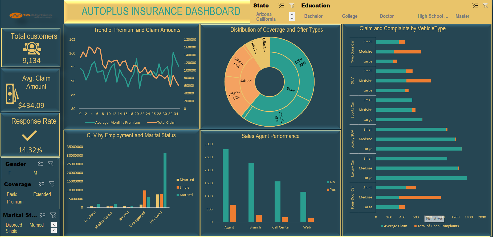
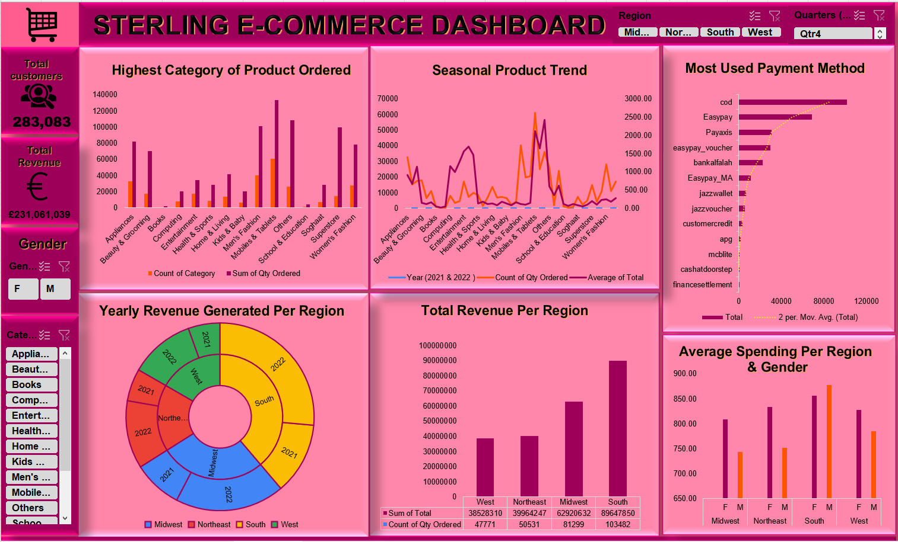

The following analysis was conducted and key insight was generated using Microsoft Excel.
In this case study, the focus was to generate key insight from the data gathered in order for the
company to improve its customer satisfaction and retention by understanding customer behavior and
preferences better its of my interest to create an interactive Excel dashboard that provides valuable insights into
customer demographics, policy information, and customer interactions to enable the company to
make data driven decisions and implement strategies to enhance customer experience and increase
policy renewals.

This insurance company get in contact with us because they aim to leverage on their Data to improve customer satisfaction and
retention by understanding customer behavior and
preferences better.After analyzing the provided dataset,
I created an interactive Excel dashboard that provides
valuable insights into customer demographics, policy
information, and customer interactions.

Sterling E-Commerce offer a wide selection of product across various categories such as health & sports,
men's and women's fashion, computing, entertainment, mobiles & tablets, appliances, beauty & grooming, home & living and many more.
As a fast-growing company, they are interested in leveraging the power of their data to gain insights into the business and improve their
efficiency.Specifically, they want to identify any
patterns or trends.